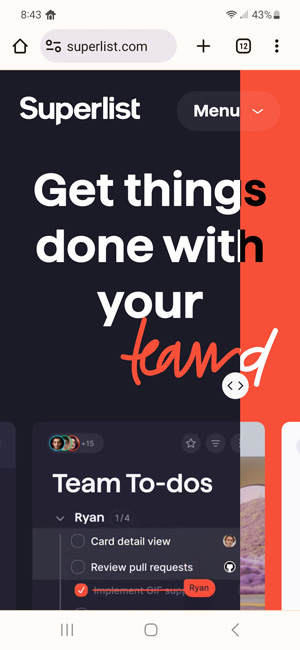
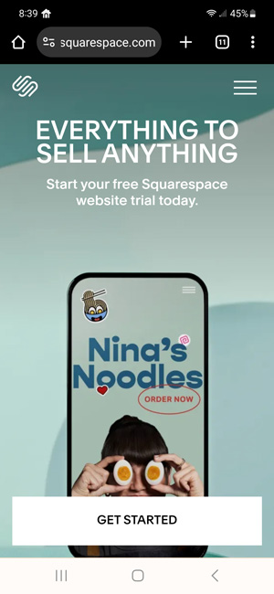

Contrast
HP
HP.com
Hp.com uses contrast in both color and scale in the design of their homepage. The bright green has the highest contrast in color from the neutral grey and naturally draws the user’s eye. The leading line of the triangle shape leads next to the smaller blue circle and yellow square on the right edge of the page. Both of these shapes are also a contrasting color from the neutral background. The mustard yellow square finally leads your eye to the main section of the page where the heading and subheading are at. Also situated in the main section is a call to action button, the contrast of the black against a more vibrant yellow color helps it to stand out.
Alignment
Superlist
Superlist.com
Superlist.com uses a unique twist on the alignment principle of design on their homepage. The menu button is split into two colors right at the edge of the word ‘menu.’ Everything straight down from that line has the color variation and is affected. The background color turns a bright red in that ‘red area’ strip. Text also changes colors on the other side of the line, and the scrolling images on the bottom of the page have the color affected when they are in the ‘red area.’ This emphasizes the words which are split by the line, and it also continues to draw the eye down through the entire page.
White Space
Square Space
Squarespace.com
Squarespace uses the white space, principle of design on their homepage. The white space on the page isn’t actually the color white, but it is an area of the page where there are few elements. The homepage is simple and clean. It has a logo and a hamburger menu in the header, a heading, and a subheading. Other than that, it is one image and a CTA button. The lack of elements doesn’t make the page boring; it actually has the opposite effect. Because there aren’t many elements to distract the viewer it emphasizes the image that they are highlighting, and makes it very easy to click the CTA button.